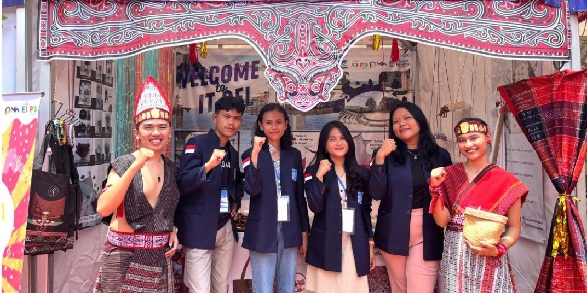
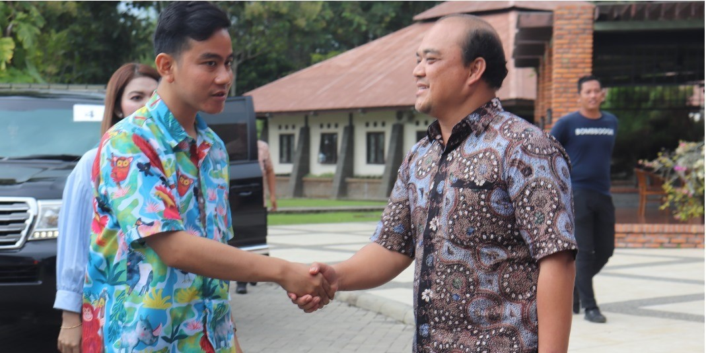

Ruang Kelas
Ruang kelas di kampus ini modern dengan dinding cerah bersih dan peralatan multimedia seperti proyektor. Meja dan kursi yang nyaman tersusun rapi, sementara pintu kaca besar memberikan cahaya alami. Ada papan tulis pintar dan dinding dipenuhi dengan peta dan grafik. Ruangan ini penuh semangat belajar dan menciptakan lingkungan yang dinamis di kampus.
Lapangan Hijau
Fasilitas lapangan hijau di kampus ini adalah area terbuka yang luas dan hijau, dihiasi dengan pepohonan dan tanaman. Jalur setapak, bangku taman, dan meja piknik disediakan untuk kenyamanan mahasiswa. Lapangan ini sering digunakan untuk pertemuan, olahraga ringan, dan acara sosial kampus, menciptakan tempat bersantai yang menyenangkan di tengah lingkungan alami kampus.
Open Theatre
Open Theatre di kampus ini adalah ruang terbuka yang dirancang untuk pertunjukan. Dikelilingi kursi yang menghadap panggung, teater ini menyajikan pengalaman menonton yang terbuka dan dinamis. Dilengkapi dengan peralatan audio dan pencahayaan, panggungnya mendukung berbagai jenis acara, termasuk konser dan drama. Fasilitas ini sering menjadi tempat berbagai kegiatan kampus, seperti pertunjukan seni, konser, atau presentasi, memberikan ruang bagi komunitas kampus untuk menikmati beragam acara budaya dan seni.
Klinik
Fasilitas klinik di kampus ini menyediakan layanan kesehatan bagi mahasiswa dan staf. Ruang tunggu yang bersih dan nyaman, ruang pemeriksaan dokter, serta area farmasi dengan obat-obatan diperlengkapi untuk perawatan medis. Tim medis yang profesional siap memberikan pelayanan kesehatan, termasuk perawatan rutin dan kasus darurat, memastikan kesejahteraan komunitas kampus.
Perpustakaan
Perpustakaan kampus ini menyajikan fasilitas lengkap bagi mahasiswa dengan ruang baca nyaman, katalog online, dan ruang studi dilengkapi teknologi modern. Sumber daya audio-visual, komputer, dan layanan bantuan referensi oleh pustakawan berpengalaman juga tersedia. Perpustakaan ini tidak hanya berfungsi sebagai gudang informasi, tetapi juga sebagai pusat aktivitas akademis yang dinamis dengan kelas, seminar, dan workshop berkala untuk mendukung pengembangan pengetahuan mahasiswa.
Asrama
Asrama kampus ini menawarkan fasilitas lengkap, termasuk kamar tidur dengan perabotan dasar, dapur bersama atau kafetaria, ruang makan, dan area lounge. Fasilitas kebersihan seperti kamar mandi bersama dan toilet, serta layanan keamanan, disediakan untuk kenyamanan dan keselamatan penghuni. Beberapa asrama juga dilengkapi dengan fasilitas olahraga, seperti lapangan atau pusat kebugaran. Akses Wi-Fi yang luas memungkinkan penghuni tetap terhubung dengan kebutuhan akademis dan hiburan mereka.
Berita Terkini
 Sampling Kemenyan Toba di Kabupaten Tapanuli
Utara, Kabupaten Humbang
Hasundutan, dan Kabupaten Pakpak Bharat
Sampling Kemenyan Toba di Kabupaten Tapanuli
Utara, Kabupaten Humbang
Hasundutan, dan Kabupaten Pakpak Bharat
 CIT Del Ikuti Kegiatan KMI EXPO XIV di Bali Hingga Terima Penghargaan Pendamping Terbaik
 Bapak Gibran Rakabuming Raka Beri Kuliah Umum kepada Mahasiswa IT Del terkait “Pemimpin Milenial”